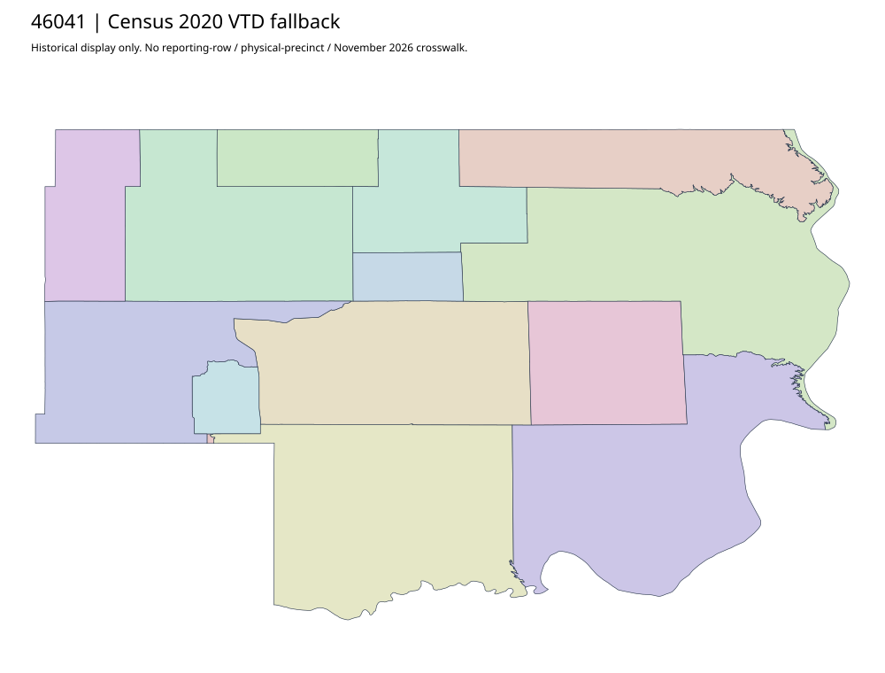

304 ordered indexDewey | 46041
Outside accepted priority parents. Complete SOS authority record and historical Census2020 fallback retained; no deep current county map investigation or leaf/current join claimed.
0 priority / 11 full historical observations. Parent is a summary ancestor, not additive to leaves. No physical feature matches or current reporting crosswalk approved.
Acquired shared-parent assets
No complete county precinct-map original acquired from this bounded chain. Use qualified fallback; roster/landing/error bodies are retained as evidence.
Census2020 fallback
14 native historical VTD features. Entire785-feature ZIP original retained once, all66 counties. Yankton has one countywide VTD. No current/reporting allocation. complete original gzip

Full binary/attribute/geometry QA
Observed authority/acquisition routes
Complete SOS authority fields including original blank/masked values: parent inventory. No contacts were sent.
Ordered full children
- Precinct-04 Timber Lake | 384 source votes | remainder
- Precinct-14 Eagle Butte South | 295 source votes | remainder
- Precinct-07 Eagle Butte East | 278 source votes | remainder
- Precinct-12 Eagle Butte North (Precinct-13 Eagle Butte North) | 273 source votes | remainder
- Precinct-15 Eagle Butte West | 200 source votes | remainder
- Precinct-06 Isabel | 125 source votes | remainder
- Precinct-11 Swiftbird/LaPlant | 89 source votes | remainder
- Precinct-09 Promise | 68 source votes | remainder
- Precinct-05 Firesteel | 63 source votes | remainder
- Precinct-08 White Horse | 54 source votes | remainder
- Precinct-02 Trail City | 42 source votes | remainder